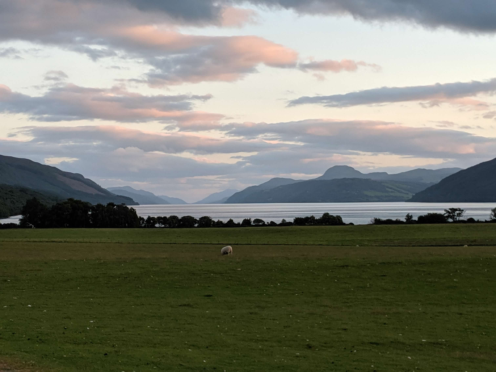
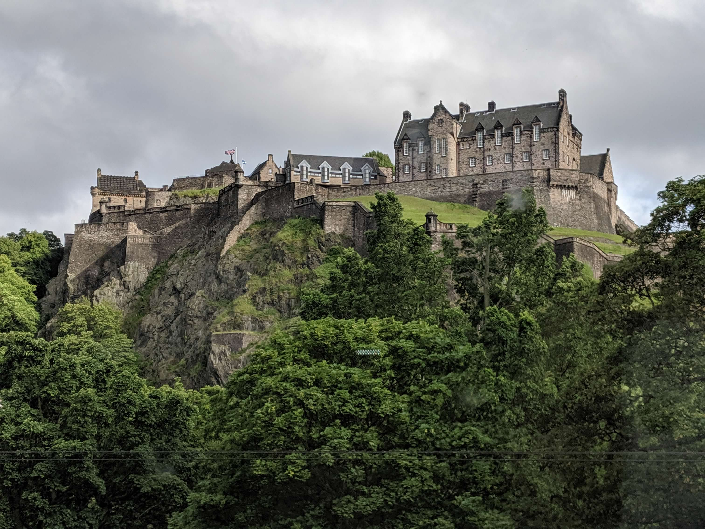

Visiting Scotland was on our family's bucket list, so to celebrate graduation from grad school, my husband and I planned the trip of a lifetime. We rented a car to get the full experience and stayed in various regions of the country. We also took a ferry to visit one of our favorite islands, and did a bus tour to visit a scenic island in Northern Scotland as well. Here's a snapshot of what we did and we can't wait to return!
| City | Region | Duration | Transportation |
|---|---|---|---|
| Loch Lommand | Mid-country | 1 day | Drove |
| Islay | Western Island | 2 days | Ferry |
| Inverness | Northern City | 3 days | Drove |
| Isle of Skye | Northern Island | 1 day | Bus |
| Edinburgh | Southern City | 1 day | Train |
Lagavulin is our favorite scotch and we visited Islay specifically to visit it.
Here's a scenic view of Loch Ness on our way to Inverness. Look out for Nessie!
This is Edinburgh Castle, a historic castle in Edinburgh that has existed since at least the 11th Century.